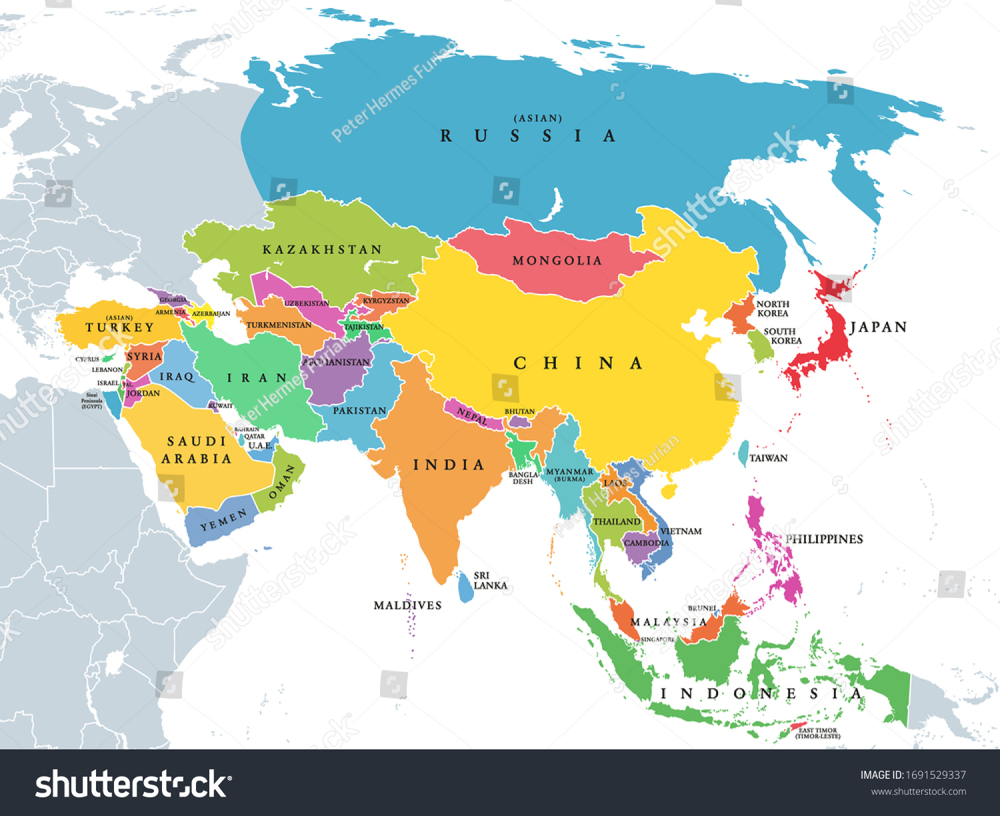
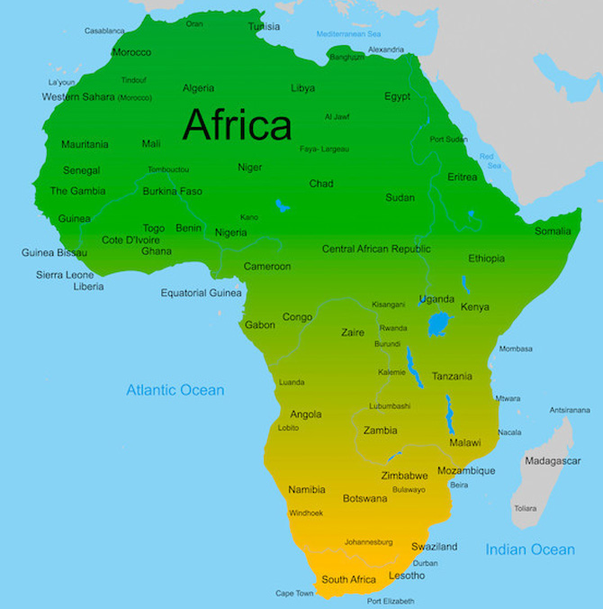
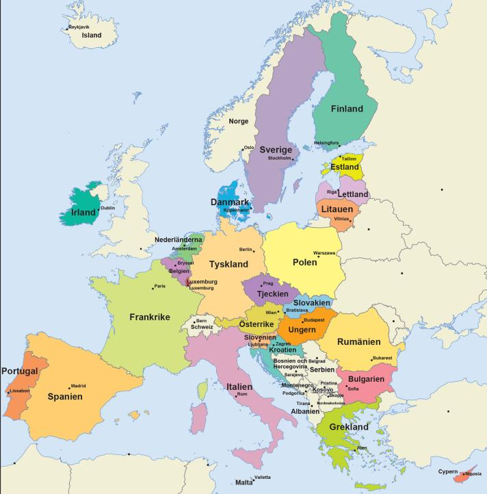

Asia is the largest and most populous continent on Earth. The boundary between Europe and Asia is generally considered to run through the Ural Mountains, the Ural River, the Caspian Sea, the Caucasus, the Black Sea, the Bosporus, the Sea of Marmara, and the Dardanelles. The boundary between Asia and Africa is typically considered to be the Suez Isthmus and the Red Sea. About 62 percent of the world's population lives in Asia, but only around 3 percent live in the northern and innermost part, namely Mongolia, the Central Asian countries of Kazakhstan, Uzbekistan, Turkmenistan, Kyrgyzstan, and Tajikistan, the Chinese provinces of Xinjiang, Tibet, Qinghai, and Russian Siberia.
Africa is the second largest continent (after Eurasia) and also the second largest continent in terms of area and population after Asia. Including its islands, Africa measures 30,244,050 km², which is equivalent to 20.3 percent of the Earth's landmass or about 6 percent of the Earth's total area. Approximately 22 million km² of this lies in the tropics, making the African continent the hottest in the world. The population of Africa in 2022 is estimated at 1.4 billion, more than one-sixth of the world's population. Its length in a north-south direction is about 8,000 km, and its greatest width is about 7,800 km.
Europe (from the Greek: Ευρώπη) is the second smallest continent by area but the third most populous, with a little over 750 million inhabitants (2023), of which over 90 percent speak languages that belong to the Indo-European language family. Europe is the second most densely populated continent and has the second highest productivity per person. The continent of Europe forms the westernmost part of the Eurasian continent, bordered by the Atlantic Ocean to the west (the boundary with North America runs through the Denmark Strait between Iceland and the Danish autonomous country Greenland), the Mediterranean Sea to the south, and the Arctic Ocean to the north, while the eastern boundary with Asia runs along the Ural Mountains, the Ural River, the Caspian Sea, the Caucasus divide, and the Black Sea (an inland sea of the Mediterranean).
